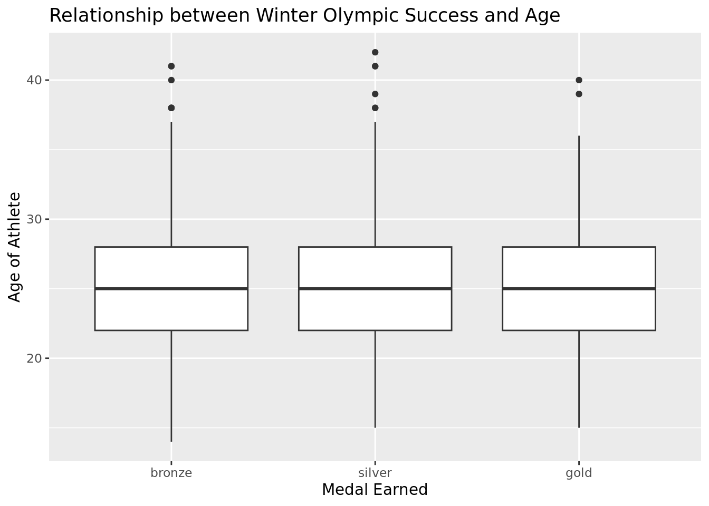
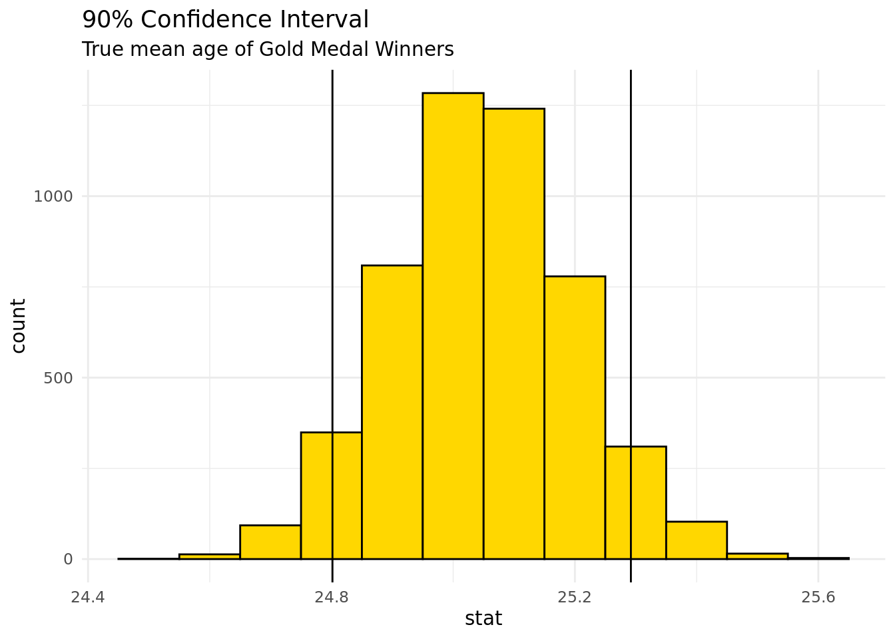
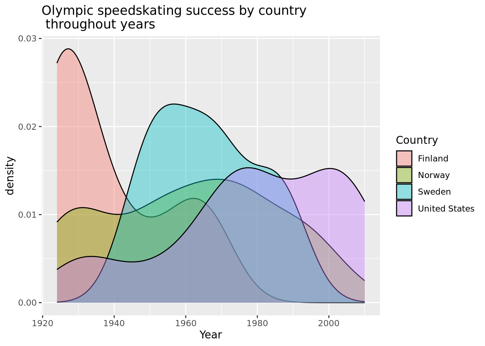

Rows: 2865 Columns: 9
── Column specification ────────────────────────────────────────────────────────
Delimiter: ","
chr (6): Sport, Event, Country, Gender, Medal, Name of Athlete or Team
dbl (3): Year, Medal Rank, Age of Athlete
ℹ Use `spec()` to retrieve the full column specification for this data.
ℹ Specify the column types or set `show_col_types = FALSE` to quiet this message.
The data comes from sports-reference.com. The data was collected five years ago and was scraped from sports-reference.com by Randi Griffin, an Evolutionary Anthropology graduate student of Duke University (Olympic History, 2018). Griffin also competed in the 2018 Winter Olympics on the Unified Korea women’s national ice hockey team. This was initially made into a visualization that was then further adapted to the current data set.
The observations represent every athlete who has won a medal at the Winter Olympics. The original dataset has 2865 observations. The dataset has nine values: Year, Sport, Event, Country, Gender, Medal Rank, Medal, Name of Athlete or Team, and Age of Athlete. Therefore, the data includes both individual medal winners as well as winning teams, and also includes medalists from countries that no longer exist.
A possible issue with this dataset is that the Olympics page on sports-reference.com has since been removed from the website. Due to low traffic on the Olympics page, less work was done to check over the information and verify that it is all correct. Sports-reference subsequently decided it was better to take down the data set. Because of this, a few of the names of the athletes are slightly misspelled or have extraneous characters, and the page was not updated with results from the 2018 or 2022 Winter Olympics. Despite this, the data was collected ethically, sports-reference is cited as the source of the data, and all of the terms of use listed on the sports-reference website appear to have been followed when the data was taken from sports-reference.com.
Sports-reference.com states that their core purpose is to “democratize data” so that users can better understand the sports that they care about. The site was first launched with Baseball-reference.com in 2000, Pro-Football-Reference.com in 2000, and Basketball-Reference.com in 2004. Sean Forman, the current president of the company that runs Sports-reference.com, Sports Reference LLC, formed Sports Reference, Inc. in October 2004 and the three separate websites aforementioned combined to create Sports Reference LLC in 2007 (About Sports Reference, 2023).
Using this data set, our research question is “What are the factors that influence Winter Olympic success across countries, events and year?” A few hypotheses that we have developed are that countries located in colder regions of the world will achieve more wins each year in the Winter Olympics. It is also likely that younger athletes will have more individual success. Also, we predict that across years, Scandinavian countries will have greater success (as measured by gold medals obtained) in Nordic sports over all other sports in the Winter Olympics. (Note to TA: These hypotheses will further develop as we further refine the specific questions that we want to ask).
This article talks about every Olympic medal winner since 1896. It mentions how the majority of winners have been from the US and this is an ongoing trend. The article also explains how China has been close to the US in amount of medals received throughout time. It also explains how before the USSR’s collapse at the end of the 1980s, the US and the USSR had similar trends. Overall, this article gives us evidence of the trends between the different countries in the Olympics, particularly the trends of the US, China, and USSR.
Our research question is different from the article that we cited because the article does not differentiate the medals won solely in the Winter Olympics, but rather the Winter and Summer Olympics. It also does not specify trends in Olympic success based on gender and events.
Methodology:
Our research topic focuses on analyzing the performance of athletes who have won medals at the Winter Olympics. We plan to answer this research question through trend identification which can be used for predicting outcomes in future Olympics. We plan to gather results from our data by creating visualizations comparing factors such as gender, age, Olympic event and more to see which most greatly affects Olympic winter success. These visuals will include histograms, scatter plots, and box plots to answer specific questions (depending on the nature of the variable in question). The variables represented, with the exception of age, are all categorical variables: countries, athletes, events, type of medals, and years.
# A tibble: 3 × 2
category n
<chr> <int>
1 Ice 1312
2 Nordic 933
3 Skiing/Snowboarding 620
Methodology continued
What is the relationship between age and medals won in individual Winter Olympics events?
WinterOlympic |>mutate(Medal =fct_relevel(Medal, "bronze", "silver", "gold")) |>filter(!is.na(`Age of Athlete`)) |>ggplot(aes(x = Medal, y =`Age of Athlete`, fill = Medal)) +geom_boxplot(show.legend =FALSE) +labs(title ="Relationship between Winter Olympic Success and Age",x ="Medal Earned",y ="Age of Athlete") +theme_minimal() +scale_fill_manual(values =c("bronze"="#cd7f32", "silver"="#C0C0C0", "gold"="#ffd700"))

It appears that there is no relationship between medal earned and how old the athlete is. It appears that there are likely other factors that contribute to whether an athlete wins a bronze, silver or gold medal. A box plot was used to show this data since one categorical variable is being compared to one continuous variable.
What is the relationship between age and quantity of medals won in the Winter Olympics across different sports categories?
WinterOlympic |>mutate(Medal =fct_relevel(Medal, "bronze", "silver", "gold")) |>filter(!is.na(`Age of Athlete`)) |>ggplot(aes(x = Medal, y =`Age of Athlete`, fill = Medal)) +geom_boxplot(show.legend =FALSE) +facet_wrap("category", ncol =3) +labs(title ="Relationship between Winter Olympic Success and Age",x ="Medal Earned",y ="Age of Athlete") +theme_minimal() +scale_fill_manual(values =c("bronze"="#cd7f32", "silver"="#C0C0C0", "gold"="#ffd700"))
This visualization shows that when the type of Winter Olympic sport category is specified, there is a slight trend toward more success in Nordic events with athletes older in their 20s. It also appears that athletes winning medals in Nordic events are on average older than those winning medals in Ice and Skiing/Snowboarding events. There appears to be an outlier with a medal earned in a Nordic event by an Olympian who was younger than 20. There are also outliers with some participants above 40 years old winning medals in ice and nordic events.
Does the year of the Winter Olympics (pre-1970 vs post-1970) affect how old the participants are?
AgeOlympic <- WinterOlympic |>filter(!is.na(`Age of Athlete`)) |>mutate(Year_Classification =if_else(Year >1970, "Recent Olympics", "Older Olympics")) |>group_by(Year_Classification) |>summarise(mean_age =mean(`Age of Athlete`))AgeOlympic
It is seen that the average age of a medal-winning Winter Olympic athlete is nearly identical in Winter Olympics less than and greater than 50 years ago.
Is average Olympian medal winner age affected by gender?
We hypothesize that the mean age of medal winning male athletes is greater than the mean age of female medalists.
Null Hypothesis:
\(\mu_m = \mu_f\)
The mean age of male medalists is equal to the mean age of female medalists.
Alterantive Hypothesis:
The mean age of male medalists is greater than the mean age of female medalists.
AgeGenderOlympic <- WinterOlympic |>filter(!is.na(`Age of Athlete`), (Gender %in%c("Men", "Women"))) AgeGenderOlympic|>group_by(Gender) |>summarise(mean_age =mean(`Age of Athlete`))
# A tibble: 2 × 2
Gender mean_age
<chr> <dbl>
1 Men 25.5
2 Women 24.6
obs_stat <-25.52113-24.62570obs_stat
[1] 0.89543
\(\bar{x}\) = 0.89543
null_dist <- AgeGenderOlympic |>specify(response =`Age of Athlete`, explanatory = Gender) |>hypothesize(null ="independence") |>generate(reps =1000, type ="permute") |>calculate(stat ="diff in means", order =c("Men", "Women"))null_dist |>get_p_value(obs_stat =0.89543, direction ="two sided")
Warning: Please be cautious in reporting a p-value of 0. This result is an
approximation based on the number of `reps` chosen in the `generate()` step. See
`?get_p_value()` for more information.
# A tibble: 1 × 1
p_value
<dbl>
1 0
The p-value is 0. This is likely not exactly 0, but rather a value that is so small that it is rounded to 0 in this format.
This means that there is a probability of 0 that there is a difference of 0.89543 years in the average age of medalists between genders given that the mean age of medalists is equal for men and women.
For a significance value of 0.05, our p-value is less than the significance value. Therefore, we can reject the null hypothesis, and have strong evidence to support the alternative hypothesis.
Do American men, on average, win more gold medals than American females in Winter Olympics?
# A tibble: 2 × 2
Gender mean_medal
<chr> <dbl>
1 Men 1.93
2 Women 1.96
It appears that men and women are nearly identical in their success in the Winter Olympics, as measured by average medal won. This shows that the average medal received in the Winter Olympics across all years was silver in both genders. This is because the value is almost exactly 2, which corresponds to silver.
Given that a participant was from a Scandinavian country and they won a gold medal, what is the probability that this was in a Nordic event, as these originated in Scandinavia?
Scandinavia <- WinterOlympic |>filter(Country =="Norway"| Country =="Sweden"| Country =="Denmark"| Country =="Finland",`Medal Rank`==1)Scandinavia |>count(category) |>mutate(prob = n /nrow(Scandinavia)) |>filter(category =="Nordic")
# A tibble: 1 × 3
category n prob
<chr> <int> <dbl>
1 Nordic 143 0.681
WinterOlympic |>filter(`Medal Rank`==1) |>count(category) |>mutate(prob = n /nrow(WinterOlympic)) |>filter(category =="Nordic")
# A tibble: 1 × 3
category n prob
<chr> <int> <dbl>
1 Nordic 312 0.109
The probability that a gold medal won by a Scandinavian athlete was in a Nordic event is 0.681.
The probability that a gold medal was won in the Winter Olympics in a Nordic event by an athlete from any country is 0.109.
What is the true mean age of gold medal winning Olympians?
set.seed(1924)Gold <- WinterOlympic |>filter(Medal =="gold") |>filter(!is.na(`Age of Athlete`))boot <- Gold |>specify(response =`Age of Athlete`) |>generate(reps =5000, type ="bootstrap") |>calculate(stat ="mean")
We are 90% confident the true mean age of gold medal winning winter Olympic athletes is between 24.80165 and 25.29201 years old.
boot |>ggplot(aes(x = stat)) +geom_histogram(fill ="gold", color ="black", binwidth =0.1) +geom_vline(xintercept =c(24.80165 , 25.29201)) +labs(title ="90% Confidence Interval",subtitle ="True mean age of Gold Medal Winners") +theme_minimal()

How does Winter Olympic age change with each successive year?
linear_reg() |>set_engine("lm") |>fit(`Age of Athlete`~ Year, data = Gold) |>tidy()
# A tibble: 2 × 5
term estimate std.error statistic p.value
<chr> <dbl> <dbl> <dbl> <dbl>
1 (Intercept) 5.96 12.7 0.471 0.638
2 Year 0.00961 0.00638 1.51 0.132
For every 1 year increase, we estimate a mean change of 0.009 years in age for a Winter Olympic gold medal winner. This shows that age for the top athletes remains pretty consistent over time, meaning the winningest athletes are not getting older or younger throughout time, they are mostly the same age.
How does the United States compare to Scandinavian countries in speedskating success?
WinterOlympic |>filter(Country %in%c("United States", "Norway", "Sweden", "Denmark", "Finland"), Sport =="Speedskating") |>ggplot(aes(x = Year, fill = Country)) +geom_density(alpha =0.4) +labs(title ="Olympic speedskating success by country \n throughout years")

This density graph shows that the United States has become more successful in this event in recent years. However, in the early Olympic years, Finland had the most success in this event and since dropped off. Olympians from Norway and Sweden have had the least success in speedskaing in recent years.
Results
Our initial testing in this draft centered around the relationship between Winter Olympic success and age. The prime age for athletes to win medals was around 25 years old, and these results remained relatively consistent throughout gender and time. When looking at medal winners both over 50 years ago and within the last 50 years, the mean age of athletes is very similar. Before 1970, the mean age was 24.95 years old and in the last 50 years, the mean age was 25.22 years old. A bootstrap done to find the true mean age of all medal winners confirmed that we are 90% certain that the true mean age of gold medal winning winter Olympic athletes is between 24.80165 and 25.29201 years old. Both the values from the last 50 years and before the last 50 years fall within this confidence interval.
In comparing the ages of athletes who won each type of medal, there was no relation between the age of the athlete and the type of medal they are winning. For gold, silver, and bronze medals, there are very similar distributions in the ages of the athletes.
In addition, an athlete’s home country can play a role in the sport that they win the medal in. For example, there is a 33% probability that a random medal won at the Winter Olympics is from a Nordic event, such as ski jumping or biathlon. However, if an athlete comes from a Scandinavian country, there is a 68% probability that their medal came from a Nordic event. Therefore, an athlete’s place of birth can also determine their success in certain events.